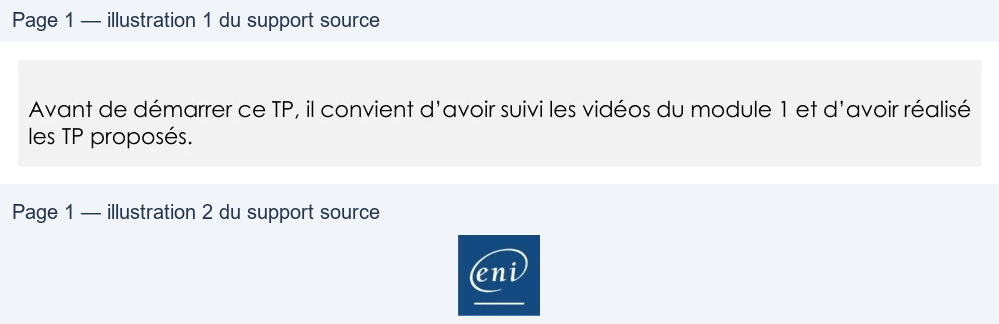

Transcription du document du Drive TSSR. La mise en forme est adaptée au Web ; les compléments IA du portail sont présentés séparément.
Cloud et Microsoft 365
TP 02 du Module 01 – Les composantes du Cloud et de Microsoft 365
Avant de démarrer ce TP, il convient d’avoir suivi les vidéos du module 1 et d’avoir réalisé
les TP proposés.
Objectifs
Création d’un tenant Microsoft 365
Prérequis
Avoir une machine ENI à disposition
Principales tâches à réaliser
•
Connectez-vous sur https://www.ovh.com/auth
Si vous possédez déjà un compte OVH, connectez-vous. Dans le cas contraire, créez votre
compte et renseignez les informations demandées.
•
Vous devrez ensuite effectuer la commande d’un nom de domaine. N’hésitez pas à
utiliser un nom de domaine bon marché (type 0,99cts).
•
Ouvrez ensuite votre tenant d’essai Microsoft 365. Afin d’ouvrir votre tenant, tapez
Microsoft 365 trial tenant dans votre moteur de recherche et cliquez sur Microsoft 365
trial tenant puis saisissez les différentes informations demandées dans l’assistant.
•
Dans la zone DNS de votre nom de domaine souscrit au préalable, ajoutez les
enregistrements nécessaires à la finalisation de l’ouverture de votre tenant.
•
Vérifiez l’intégrité de votre nom de domaine et modifiez le suffixe DNS de votre premier
utilisateur afin d’utiliser votre nom de domaine. Effectuez des tests d’envoi/réception
d’email pour confirmer le bon fonctionnement.
Pensez à bien noter votre adresse de tenant et votre mot de passe
Page 1/1
© ENI – Tous droits réservés
